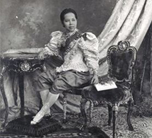
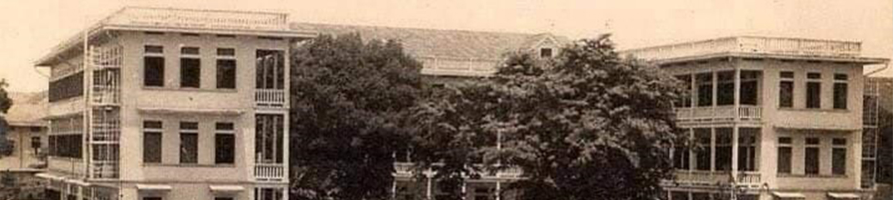
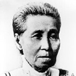
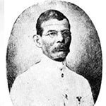
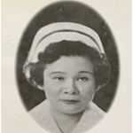
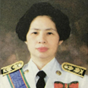
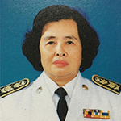
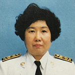
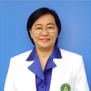
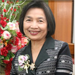

เกี่ยวกับภาควิชา

ประวัติความเป็นมา
สืบเนื่องจากสมเด็จพระศรีพัชรินทรา-บรมราชินีนาถ ในพระบาทสมเด็จพระจุลจอมเกล้าเจ้าอยู่หัว ทรงมีประสบการณ์เกี่ยวกับการ คลอดทั้งแผนโบราณและการผดุงครรภ์แผนใหม่ เมื่อพระองค์ทรงมีพระประสูติกาลพระเจ้าลูกยาเธอเจ้าฟ้าอัษฎางค์เดชาวุธ เมื่อวันที่ 17 พฤษภาคม 2431 โดยมี นายปีเตอร์ เกาแวน ถวายการดูแลตามแบบผดุงครรภ์แผนใหม่และทรงเลิกผทมเพลิง (อยู่ไฟ) ทรงตรัสว่า การไม่อยู่ไฟสบายกว่ามาก ทรงชักชวน ข้าราชบริพารมารับบริการผดุงครรภ์แผนใหม่ มีผู้หันมานิยมตามเป็นจํานวนมาก พระองค์มี พระราชดําริว่า การผดุงครรภ์ในประเทศไทยยังไม่มีแพทย์ผดุงครรภ์ ที่มีความรู้ความสามารถตามแผนใหม่ที่ถูกต้อง สตรีที่คลอดบุตร ทั่วไปได้รับการดูแลแบบโบราณ ยังนิยมการอยู่ไฟ และได้รับอันตรายมาก พระองค์จึงพระราชทานทรัพย์ส่วนพระองค์ให้จัดตั้ง โรงเรียนแพทย์ผดุงครรภ์และหญิงพยาบาลขึ้นในโรงพยาบาลศิริราช เริ่มเปิดทําการสอนเมื่อวันที่ 12 มกราคม พ.ศ. 2439 เพื่อเป็นสถาน ศึกษาแก่สตรีในการศึกษาวิชาการผดุงครรภ์และวิชาพยาบาล
เมื่อโรงเรียนแพทย์ผดุงครรภ์และหญิงพยาบาล ได้ก่อตั้งขึ้นเป็นครั้งแรกในประเทศไทย ถือได้ว่าวิชาการผดุงครรภ์ หรือการ พยาบาลมารดาและทารกได้ถือกําเนิดขึ้นพร้อมกับกําเนิดของโรงเรียนพยาบาล ซึ่งต่อมาได้พัฒนาเป็นคณะพยาบาลศาสตร์ มหาวิทยาลัยมหิดลในปัจจุบัน ภาควิชาการพยาบาลสูติศาสตร์-นรีเวชวิทยา คณะพยาบาลศาสตร์ มหาวิทยาลัยมหิดล มีวิวัฒนาการ และได้กําเนิดมาพร้อมกับโรงเรียนแพทย์ผดุงครรภ์และหญิงพยาบาล ถือได้ว่าเป็นภาควิชาการพยาบาลแห่งแรกและมีอายุเก่าแก่ที่สุด ในประเทศไทย การดําเนินการศึกษาด้านการผดุงครรภ์หรือการพยาบาลมารดาและทารกได้มีวิวัฒนาการ มีการเปลี่ยนแปลงปรับปรุง หลักสูตรตามการเปลี่ยนแปลงของสังคมและวิทยาศาสตร์มาจนถึงปัจจุบัน ภาควิชาการพยาบาลสูติศาสตร์-นรีเวชวิทยา ได้รับการอนุมัติให้เปลี่ยนฐานะจากแผนกวิชาการพยาบาลสูติศาสตร์-นรีเวชวิทยา เป็น ภาควิชา เมื่อวันที่ 18 กุมภาพันธ์ 2517 โดบคณะกรรมการจัดตั้งคณะพยาบาลศาสตร์ ซึ่งมี อาจารย์สงวนสุข ฉันทวงค์ ผู้อ่านวยการ โรงเรียนพยาบาลผดุงครรภ์และอนามัยศิริราช ในสมัยนั้นเป็นประธาน การได้รับอนุมัติดังกล่าวประกาศลงในราชกิจจานุเบกษาฉบับ พิเศษ เล่มที่ 91 ตอน 37 หน้า 49 - 50 ลงวันที่ 28 กุมภาพันธ์ 2537
ภาควิชาการพยาบาลสูติศาสตร์-นรีเวชวิทยา เป็นผู้นําทางวิชาการในการจัดการศึกษา การ วิจัย และการให้บริการทางวิชาการ เกี่ยวกับการผดุงครรภ์ การพยาบาลมารดา-ทารกแรกเกิด และครอบครัว รวมทั้งการพยาบาลสุขภาพสตรี เพื่อพัฒนาคุณภาพชีวิตของสตรี มารดาทารก แรกเกิด และครอบครัว อันจะส่งผลในระยะยาวต่อสังคม
โดยภาควิชาฯ มีบุคลากรทั้งหมด 29 คน ประกอบด้วยข้าราชการสาย ก และพนักงาน มหาวิทยาลัย ที่ปฏิบัติงานในตําแหน่งอาจารย์ 28 คน และพนักงานมหาวิทยาลัยปฏิบัติงาน ในตําแหน่งผู้ปฏิบัติงานบริหาร 1 คน
จำแนกตามตำแหน่งทางวิชาการ ประกอบด้วย:
• รองศาสตราจารย์ 4 คน
• ผู้ช่วยศาสตราจารย์ 8 คน
• อาจารย์ 16 คน

รายนามหัวหน้าภาควิชา








